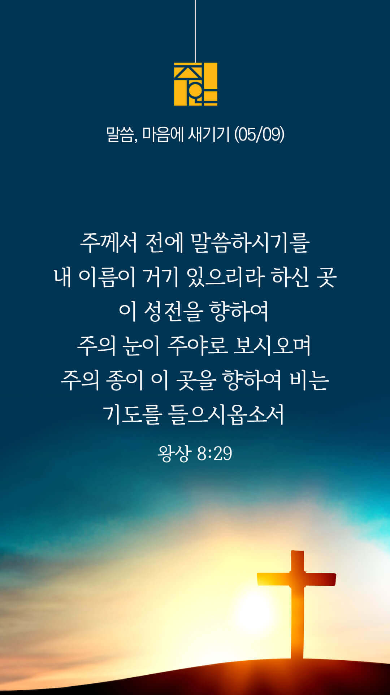
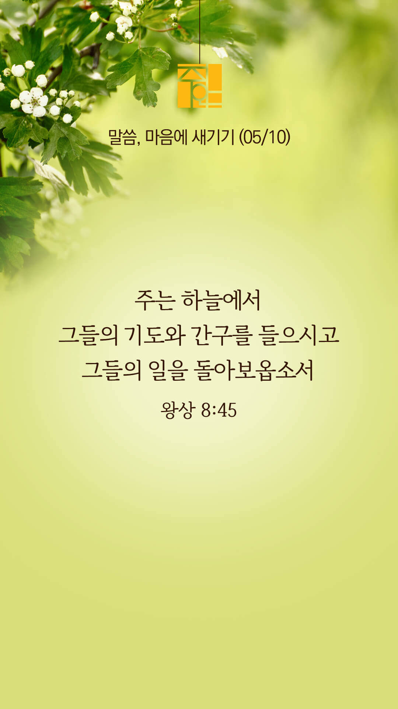
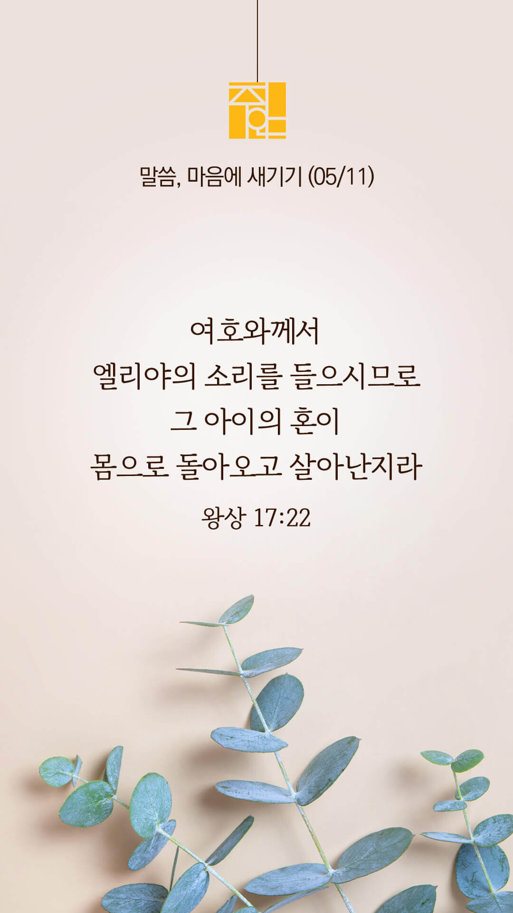
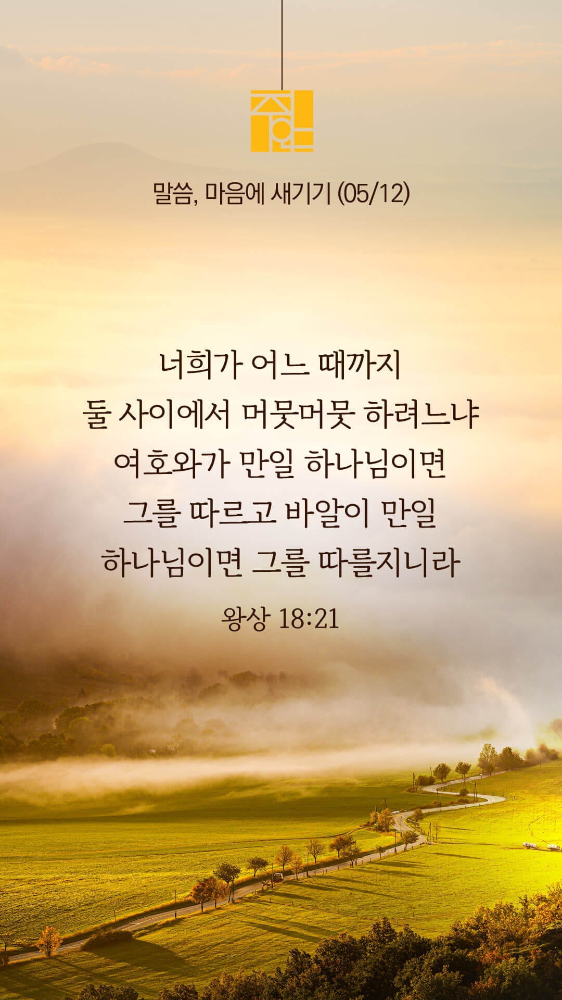
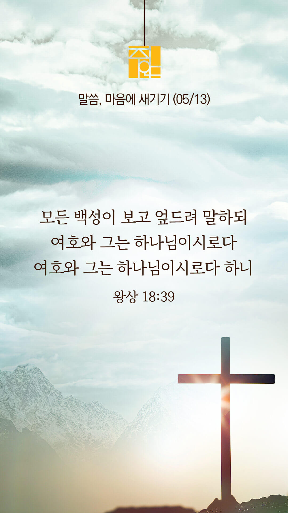
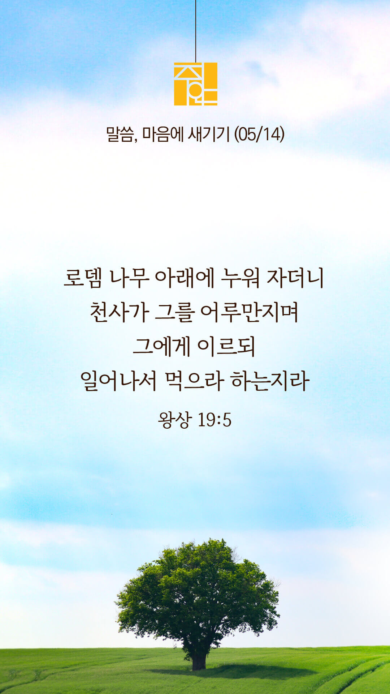

주의 말씀은 내 발에 등이요
내 길에 빛이니이다 (시119:105)
오늘의 말씀입니다
음악 소리가 크면 조절하시기 바랍니다

마음의 묵상
왕상 8:29
“주께서 전에 말씀하시기를 내 이름이 거기 있으리라 하신 곳 이 성전을 향하여 주의 눈이 주야로 보시오며 주의 종이 이 곳을 향하여 비는 기도를 들으시옵소서”
1. 위의 말씀은 솔로몬이 하나님의 성전을 완공한 뒤 드린 기도입니다
2. 솔로몬은 성전을 향해 기도할 때 하나님께서 어떻게 해주시길 간구하나요?
3. “주님의 몸 된 이 땅의 교회들과 거룩한 성전이라고 하신 저의 몸을 주께서 지키시고, 능력을 부어주시며, 성령으로 충만케 하소서” 간절히 기도합시다
주님께서 늘 함께 하시길 소망하며 간구합니다
주의 말씀은 내 발에 등이요
내 길에 빛이니이다 (시119:105)
오늘의 말씀입니다
음악 소리가 크면 조절하시기 바랍니다

마음의 묵상
왕상 8:45
“주는 하늘에서 그들의 기도와 간구를 들으시고 그들의 일을 돌아보옵소서”
1. 위의 말씀은 이스라엘 백성들이 적군과 싸우다가 주의 성전을 향해 기도할 때 응답해 달라는 솔로몬의 중보적 기도입니다
2. 당신은 평소 다른 이들을 위해 얼마나 기도하시나요?
3. “주님, 우리 민족을 긍휼히 여겨주시고 한국교회를 도와주소서” 간절히 기도합시다
예수님처럼 중보하는 삶을 살게 하소서
주의 말씀은 내 발에 등이요
내 길에 빛이니이다 (시119:105)
오늘의 말씀입니다
음악 소리가 크면 조절하시기 바랍니다

마음의 묵상
왕상 17:22
“여호와께서 엘리야의 소리를 들으시므로 그 아이의 혼이 몸으로 돌아오고 살아난지라”
1. 하나님은 엘리야의 기도를 들으시고 사르밧 과부의 아들을 어떻게 해주셨나요?
2. 당신은 엘리야의 심정으로 누군가를 위해 기도하고 계신가요?
3. 이 시간 잠시 엘리야의 심정을 가지고 고통 중에 있는 지인들을 위해 기도합시다
주님은 다른 이들을 위한 기도에 기쁨으로 응답하십니다
주의 말씀은 내 발에 등이요
내 길에 빛이니이다 (시119:105)
오늘의 말씀입니다
음악 소리가 크면 조절하시기 바랍니다

마음의 묵상
왕상 18:21
“엘리야가 모든 백성에게 가까이 나아가 이르되 너희가 어느 때까지 둘 사이에서 머뭇머뭇 하려느냐 여호와가 만일 하나님이면 그를 따르고 바알이 만일 하나님이면 그를 따를지니라 하니 백성이 말 한마디도 대답하지 아니하는지라”
1. 위의 말씀은 갈멜산에서 엘리야가 이스라엘 백성들에게 선포한 말씀입니다
2. 당신은 온전히 하나님만을 따르고 계신가요? 머뭇머뭇하고 계신 부분은 없나요?
3. “타협하는 신앙이 아니라 온전히 주님을 따르게 하소서” 간절히 기도합시다
주님만 따릅니다
주의 말씀은 내 발에 등이요
내 길에 빛이니이다 (시119:105)
오늘의 말씀입니다
음악 소리가 크면 조절하시기 바랍니다

마음의 묵상
왕상 18:39
“모든 백성이 보고 엎드려 말하되 여호와 그는 하나님이시로다 여호와 그는 하나님이시로다 하니”
1. 갈멜산에서 불로 응답하시는 하나님을 보며 이스라엘 백성들은 무엇이라고 두 번 연속으로 고백하나요?
2. 당신은 믿음으로 주님과 동행한 엘리야가 되시렵니까? 아니면 구경하다가 뒤늦게 반응한 이스라엘 백성이 되시렵니까?
3. “주님, 저에게 엘리야의 담대한 믿음을 주소서” 간절히 기도합시다
엘리야는 우리와 성정이 같은 사람이로되(약 5:17)
주의 말씀은 내 발에 등이요
내 길에 빛이니이다 (시119:105)
오늘의 말씀입니다
음악 소리가 크면 조절하시기 바랍니다
